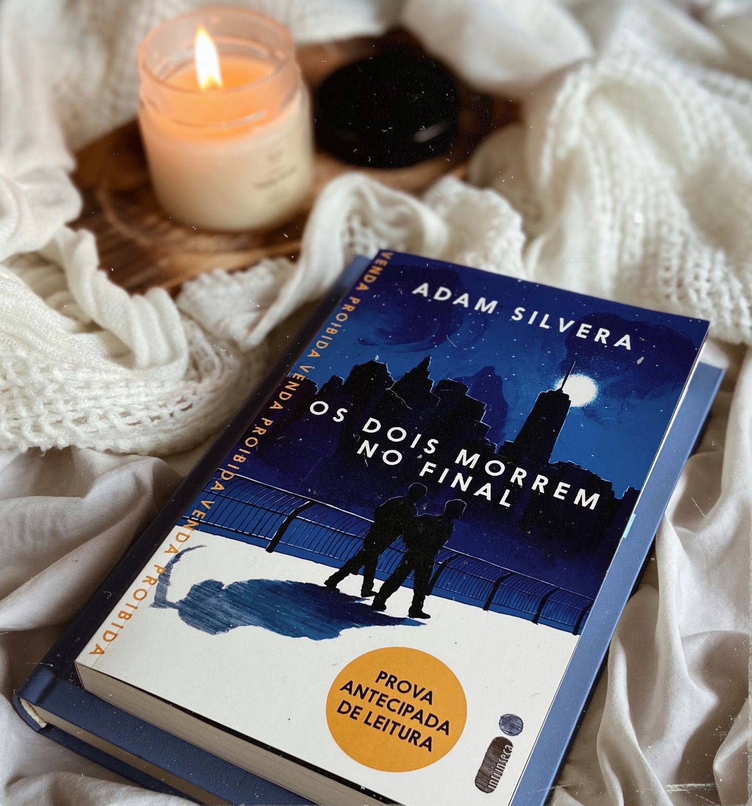
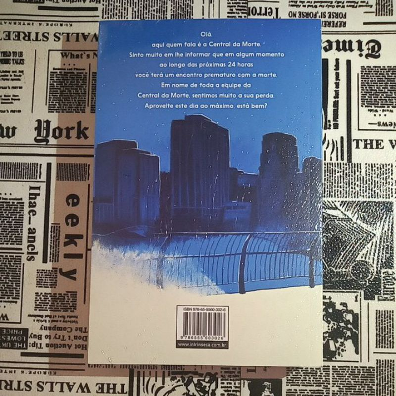

Os dois morrem no final
Uma história sensível e emocionante, Os dois morrem no final nos lembra o que significa estar vivo. Com seu olhar único, Adam Silvera mostra que cada segundo importa, e mesmo que não haja vida sem morte, nem amor sem perda, tudo pode mudar em 24 horas.
 